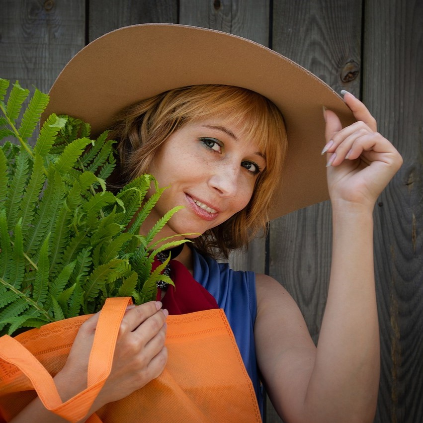
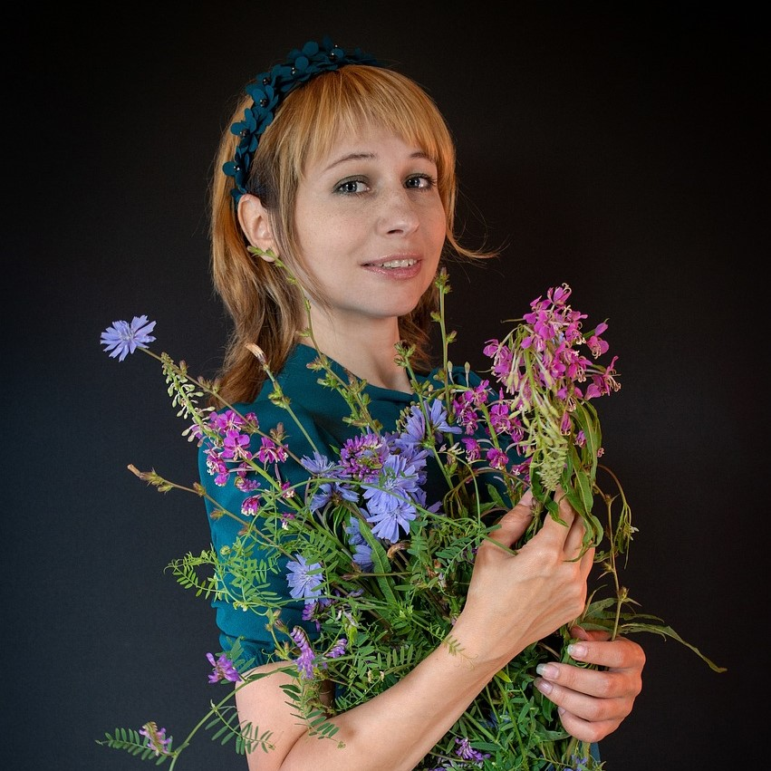
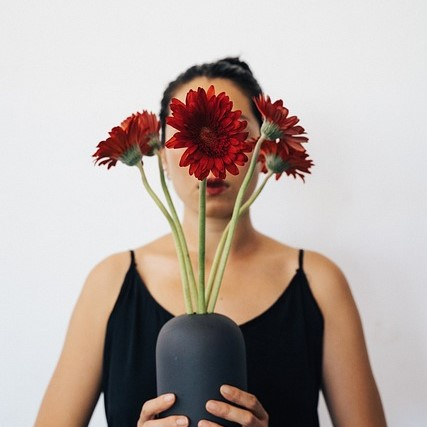

Découvrez l'équipe exceptionnelle qui donne vie à la magie des fleurs dans notre boutique !
Chez Bloom Petals, nous sommes fiers de compter sur une équipe de quatre professionnels dévoués qui transforment chaque visite en une expérience florale inoubliable.
Ensemble, notre équipe partage une passion pour les fleurs, un engagement envers la qualité et le désir de créer des moments inoubliables pour nos clients. Que vous ayez besoin d'un bouquet romantique, d'un arrangement de mariage époustouflant ou de conseils experts, notre équipe est prête à réaliser vos rêves floraux.
Venez nous rendre visite au 18 rue du bosquet et laissez notre équipe de passionnés des fleurs faire de votre journée un événement extraordinaire.
Brigitte
Notre Fleuriste Principal - L'Artisanne de la Beauté Florale : Notre maître fleuriste est la créatrice derrière chaque bouquet unique, chaque arrangement de mariage et chaque composition florale personnalisée. Avec un sens inné de l'esthétique, elle sélectionne les fleurs les plus fraîches et les plus belles pour chaque création.

Samantha
Le Sourire Accueillant - Notre Vendeuse en Boutique : bien plus qu'une conseillere en fleurs. Avec un sourire chaleureux, elle accueille chaque client, écoute attentivement leurs besoins et les guide vers les sélections qui correspondent à leur occasion spéciale.
Brigitte (encore elle)
La Maestro de la Gestion - Notre Gestionnaire de Boutique : Elle orchestre l'ensemble de nos opérations avec habileté. Elle assure la disponibilité constante de fleurs fraîches, planifie des événements spéciaux et garantit que votre expérience chez Bloom Petals soit exceptionnelle.


Jeanine
L'Assistant Fleuriste - La Main Secourable : Notre assistante fleuriste incarne la précision et le souci du détail. Elle prépare soigneusement les fleurs, veille à ce que chaque arrangement soit parfait et veille à la fraîcheur de nos créations.